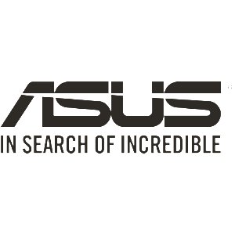

A apple foi quem salvou nossa empresa da falência, uma empresa que cada produto tem seu significado e que a própria marca tem suas filosofias, uma marca mais cara, mais hipster, escravocrata, porém muito leal ao seus princípios propostos.
A HP, não é Harry Potter, não é Howard Phillips, e sim, Hewlett Packard, ela estava com muitos prejuízos quando entrou na nossa empresa, tinha investido muito em tablets e all in ones na época errada, mandou muitos funcionários embora, e começou a contratar serviços de freelancers.
A arduino acabou vindo pela demanda de produtos da sua marca para automações em alguns projetos, ela sempre acaba trazendo alguns projetos meio malucos, e isso é bom, estimula a cratividade dos nossos associados, pode resultar em novos projetos inovadores, e ainda torna o trabalho mais sadio.
A raspberry veio com uma grande surpresa, a sua nova placa com 2gb de RAM, e com essa novidade fora possível outros projetos incríveis.
Ah, a Asus, com todo seu UX, design e desenpenho, foi uma honra ter eles conosco, até porque sempre fui um fã da marca.

Adoro a kingston, eles vivem mandando presentinhos para nós, e os projetos deles são muito legais de fazer, eles dão tempo, lugar, o que você precisar eles te dão, suporte incrível.
A astro sempre nos envia missões e não serviços, eles sempre pedem umas coisas muito malucas que ás vezes parece ser impossível de acontecer, mas de alguma forma mágica, a gente sempre entrega o que eles querem...